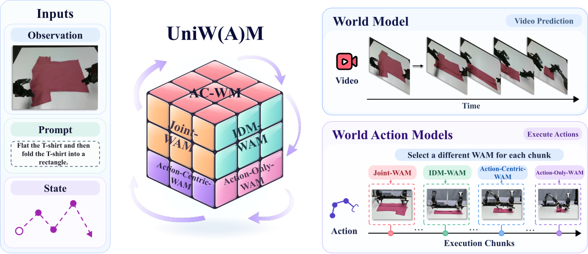
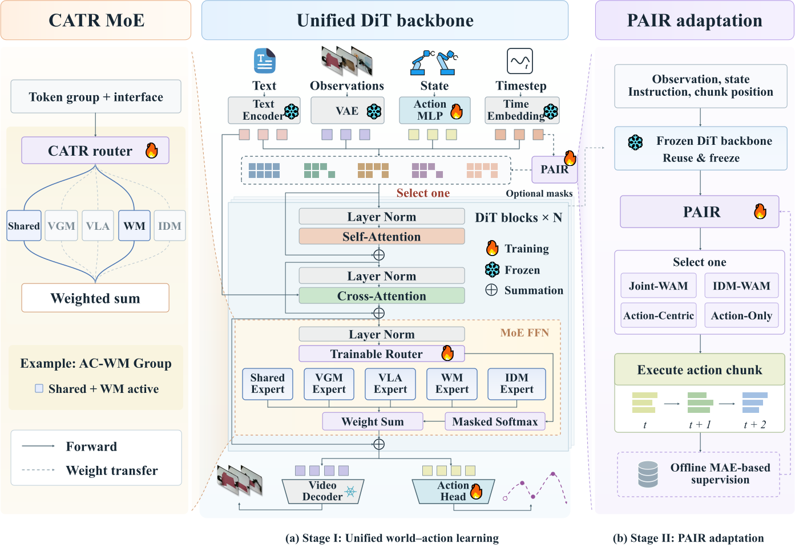
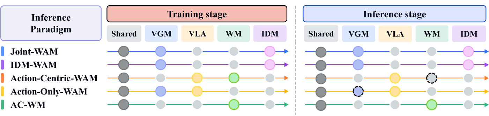
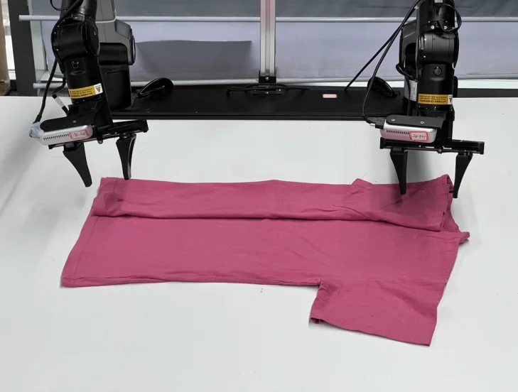
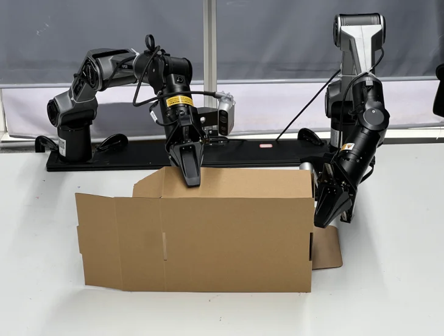
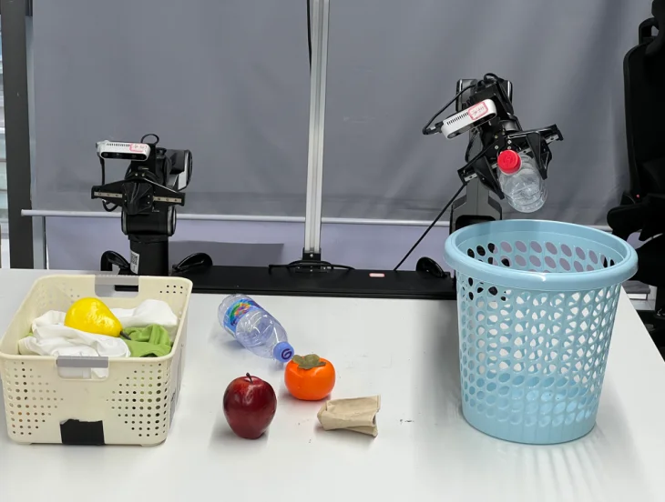
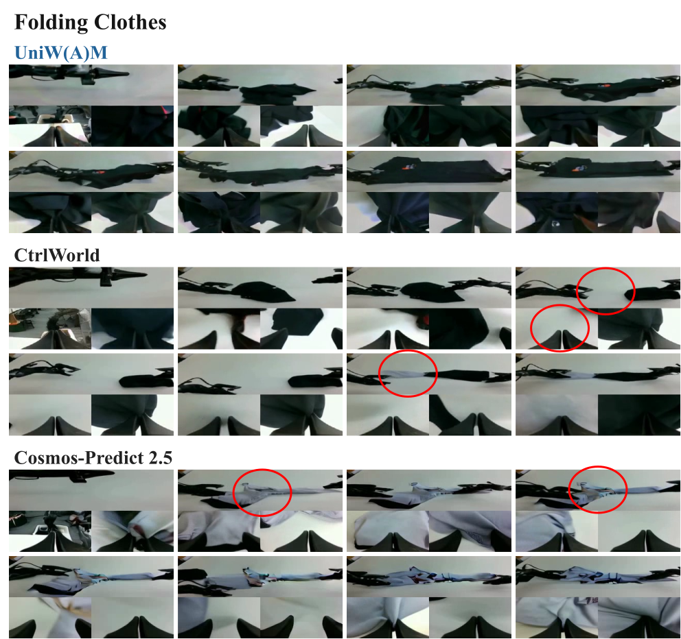
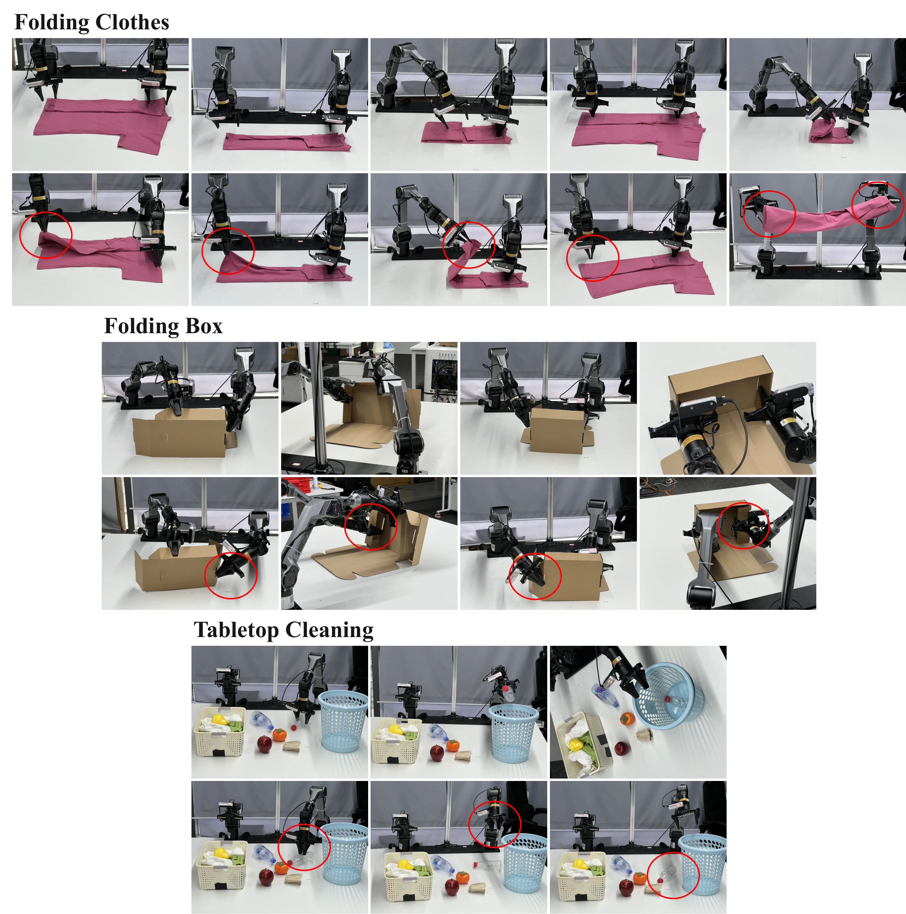
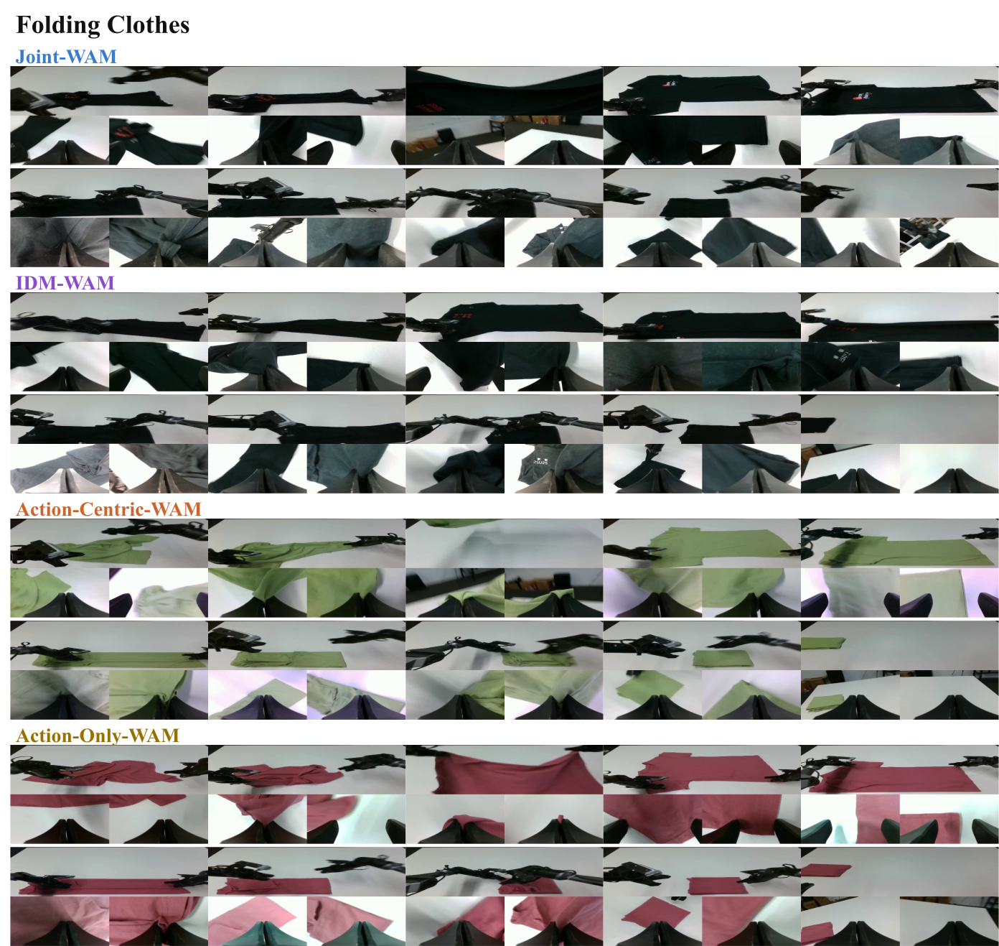

UniW(A)M
A Unified Mixture-of-Experts Framework for World and World-Action Models
1Tsinghua University2Zhongguancun Academy3East China Normal University4Manifold AI
*Joint first authors.†Corresponding authors.
World models (WMs) and world-action models (WAMs) focus on future world prediction and executable action generation, respectively. Although these models learn shared physical dynamics and interaction semantics from embodied trajectories, they are typically trained in isolation, which limits the reuse of knowledge between prediction and control. The central challenge is therefore to develop a unified learning framework that shares these dynamics while preserving the distinct modeling capabilities required by each paradigm. We propose UniW(A)M, a mixture-of-experts world-(action) model built upon diffusion Transformers that unifies action-conditioned world modeling and diverse WAM variants. Shared experts capture common dynamics, while atomic capability experts are reused across interfaces so that each interface keeps its own conditional pathway. A plug-in adaptive interface router (PAIR) learns chunk-level interface selection through lightweight supervised target-domain adaptation, keeping the backbone frozen. We evaluate UniW(A)M on LIBERO, RoboTwin 2.0, and three real-world manipulation tasks, where it achieves 88.3% average real-world success versus 76.7% for the strongest baseline. On WorldArena, it leads action-conditioned world modeling on all three tasks. AC-WM co-training contributes to action generation on every action interface, and with supervised target-domain adaptation, PAIR raises OOD success from 63.3% to 76.7%.
vs 76.7% strongest baseline
99.2% on Spatial
+20.6 pts over π0.5
up from 63.3%, backbone frozen
action-conditioned prediction
One model that predicts the world and acts in it.
World models predict how a scene evolves; world-action models generate actions to change it. Both learn from the same embodied trajectories, yet they are usually trained apart. UniW(A)M trains them together in a single mixture-of-experts diffusion Transformer, so the two supervision signals shape one shared representation of the dynamics.

Shared + atomic experts
One shared expert models common dynamics; four atomic experts — VGM, VLA, WM, IDM — each own one predictive role and are reused by every interface that needs it.
CATR routing
Capability-Aligned Token Routing sends video and action target tokens to their own eligible experts and learns mixture weights within each set.
PAIR at deployment
A plug-in router picks the interface for every action chunk — fast action paths for reaching, video-aware paths for contact — with the backbone frozen.
Five interfaces. Four atomic capabilities. One backbone.
Each interface is defined by a video–action visibility mask. Pick one to see which experts it activates and what its tokens can attend to during training and at deployment.


Every interface beats the strongest baseline.
Three dual-arm tasks on an AgileX platform: deformable cloth folding, contact-rich box folding and long-horizon tabletop cleaning. 20 trials per task.



Success rate (%)
Baselines in grey; UniW(A)M interfaces in color.
Real-world tasks in motion
Head-camera episodes from our dual-arm dataset and OOD test scenes. One garment, box or table per clip; garments start laid flat.
Strong in simulation, robust to scene shift.
Trained only on clean RoboTwin 2.0 scenes, UniW(A)M reaches 66.6% on randomized scenes — 20.6 points above the strongest listed baseline.
RoboTwin 2.0 · 50 tasks
Clean-only training.
LIBERO
Success rate (%) · best in bold, second underlined.
RoboTwin 2.0 tasks
Twelve of the 50 dual-arm tasks, shown with clean-scene episodes from the benchmark data.
LIBERO tasks
Two tasks from each suite.
The same model is also the best world model here.
In AC-WM mode, UniW(A)M predicts future video from given actions. It achieves the highest EWMScore-P on all three tasks against Cosmos-Predict 2.5 and Ctrl-World.
Action-driven and interaction metrics
0–100 scale, higher is better.
EWMScore-P
Aggregate score per task.
Action-conditioned future prediction
Given the same action sequence, UniW(A)M keeps garments, cardboard edges and bottle labels consistent; red circles mark baseline artifacts.

Choose the right interface for every chunk.
The jointly trained interfaces trade speed for foresight. PAIR is a lightweight classifier on frozen UniW(A)M features that picks one interface per action chunk, trained from 2,000 target-domain chunks per task.
Out-of-distribution success (%)
Unseen garments, box types and cluttered backgrounds.
Which interface does PAIR pick?
Selection share by execution phase.
Fast action pathways (Action-Centric, Action-Only) take 60–75% of choices while reaching; video-aware pathways (Joint, IDM) take 60–70% during contact and 70–90% during core manipulation.
Success vs. completion time
OOD average; time over successful trials.
Inference latency per step
Full chunk time ÷ 16 denoising steps (ms).
Routing vs. heuristics and LoRA
Folding Clothes, OOD success (%). LoRA adapts one fixed interface on the same target-domain chunks.

Training together makes every interface stronger.
The interfaces share one set of dynamics, and each expert takes on a clear role. All results below use the same data and total training budget.
More interfaces, stronger policies
Folding Clothes. Interfaces join training one at a time.
Joint-WAM rises from 50% to 90% as more interfaces train together, even with fewer updates per interface.
Capability-aligned routing
Average success over three tasks (%).
Sending video and action tokens to their own experts (CATR) takes Action-Centric from 10.0% to 81.7%, and AC-WM co-training adds another 15–43 points.
Every expert has a role
Folding Clothes success (%) with one expert left out, 20K matched steps.
Action experts carry 55–70 points of success and world-prediction experts 20–45. The WM expert also carries AC-WM: without it, EWMScore-P drops from 61.7 to 31.2.
How the gate splits the work
Gate-weighted utilization, shared vs. atomic (%).
Action tokens lean more on their atomic expert than video tokens do in every WAM.
Mixture of experts vs. a dense backbone
Folding Clothes success (%). A dense DiT of similar size (16.4B vs 16.2B), or one with matched initialization, stays behind UniW(A)M.
Qualitative rollouts by interface
Frames from the four WAM interfaces on each real-world task.

BibTeX
@article{xu2026uniwam,
title = {UniW(A)M: A Unified Mixture-of-Experts Framework for
World and World-Action Models},
author = {Xu, Jingbo and Fang, Jianjie and Li, Zhuohang and Song, Zihao and
Wang, Zhaolu and Liu, Xvyuan and Zhang, Xin and Su, Haisheng and
Tang, Yinzhou and Gao, Chen and Wu, Wei and Li, Yong},
journal = {arXiv preprint arXiv:2610.18697},
year = {2026}
}